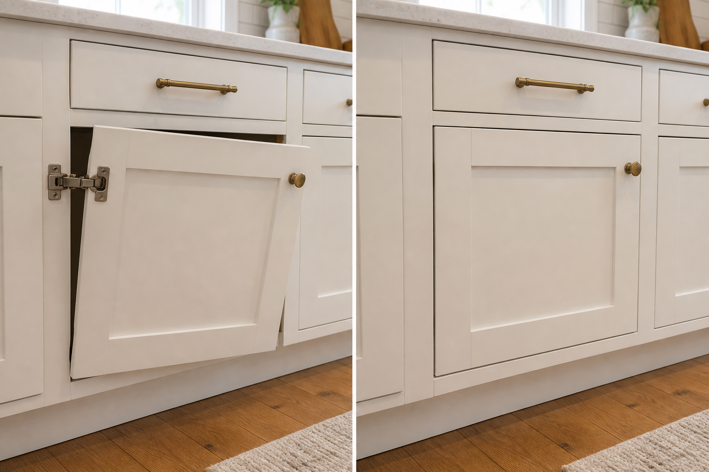

1
Post the issue
Upload a photo or video, describe the problem, and add your location.
Plumbing · Handyman · Home repairs
Post a photo or video of the problem, share your location, and local workers can review the job and respond. It only takes a minute.
Start here
Describe the problem and add a photo on the next step. The whole thing takes about a minute.
Post My ProblemHow It Works
The process is easy and low-risk — you stay in control the whole way.
Upload a photo or video, describe the problem, and add your location.
Available plumbers, handymen, or contractors look at the job details.
Compare responses and decide who you want to speak with.
Common Jobs You Can Post
If your repair is on this list, Local Fix is for you.
Why homeowners use Local Fix
Instead of calling multiple people and explaining the same issue again and again, upload the problem once and let local workers decide if they can help.
Your request is reviewed by people who serve your area.
Better details can lead to faster, more accurate responses.
Posting a job does not force you to hire anyone.
Submitting a repair request is free for homeowners.
Are You a Local Worker?
Review plumbing, handyman, and repair jobs in your area, see the details and photos, and decide which jobs are worth responding to.
Join as a Worker
FAQ
Yes, homeowners can submit a repair request for free.
No. Posting a job does not require you to hire anyone.
You can post plumbing, handyman, and general home repair jobs.
Photos and videos help workers understand the problem before responding.
Response times depend on worker availability and the type of job.
Local Fix is new and growing. Right now we collect each worker’s trade, service area, and experience when they sign up, but we do not yet run background checks or verify licenses and insurance. Always confirm credentials directly with anyone before hiring.